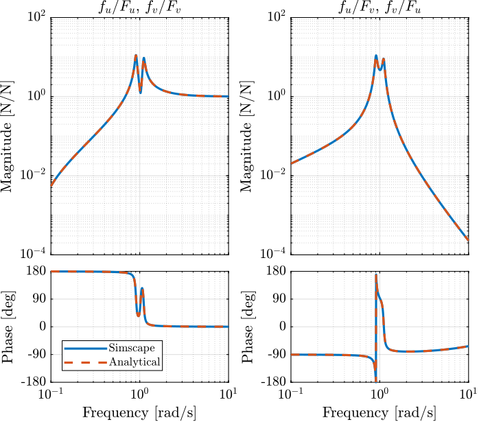

Active Damping of Rotating Platforms using Integral Force Feedback - Matlab Computation
Table of Contents
This document gathers the Matlab code used to for the paper (Dehaeze and Collette 2020).
It is structured in several sections:
- Section 1: presents a simple model of a rotating suspended platform that will be used throughout this study.
- Section 2: explains how the unconditional stability of IFF is lost due to Gyroscopic effects induced by the rotation.
- Section 3: suggests a simple modification of the control law such that damping can be added to the suspension modes in a robust way.
- Section 4: proposes to add springs in parallel with the force sensors to regain the unconditional stability of IFF.
- Section 5: compares both proposed modifications to the classical IFF in terms of damping authority and closed-loop system behavior.
- Section 6: contains the notations used for both the Matlab code and the paper
The matlab code is accessible on Zonodo and Github (Dehaeze 2020).
To run the Matlab code, go in the matlab directory and run the following Matlab files corresponding to each section.
| Sections | Matlab File |
|---|---|
| Section 1 | s1_system_description.m |
| Section 2 | s2_iff_pure_int.m |
| Section 3 | s3_iff_hpf.m |
| Section 4 | s4_iff_kp.m |
| Section 5 | s5_act_damp_comparison.m |
1 System Description and Analysis
1.1 System description
The system consists of one 2 degree of freedom translation stage on top of a spindle (figure 1).

Figure 1: Schematic of the studied system
The control inputs are the forces applied by the actuators of the translation stage (\(F_u\) and \(F_v\)). As the translation stage is rotating around the Z axis due to the spindle, the forces are applied along \(\vec{i}_u\) and \(\vec{i}_v\).
1.2 Equations
Based on the Figure 1, the equations of motions are:
Where \(\bm{G}_d\) is a \(2 \times 2\) transfer function matrix.
\begin{equation} \bm{G}_d = \frac{1}{k} \frac{1}{G_{dp}} \begin{bmatrix} G_{dz} & G_{dc} \\ -G_{dc} & G_{dz} \end{bmatrix} \end{equation}With:
\begin{align} G_{dp} &= \left( \frac{s^2}{{\omega_0}^2} + 2 \xi \frac{s}{\omega_0} + 1 - \frac{{\Omega}^2}{{\omega_0}^2} \right)^2 + \left( 2 \frac{\Omega}{\omega_0} \frac{s}{\omega_0} \right)^2 \\ G_{dz} &= \frac{s^2}{{\omega_0}^2} + 2 \xi \frac{s}{\omega_0} + 1 - \frac{{\Omega}^2}{{\omega_0}^2} \\ G_{dc} &= 2 \frac{\Omega}{\omega_0} \frac{s}{\omega_0} \end{align}1.3 Numerical Values
Let’s define initial values for the model.
k = 1; % Actuator Stiffness [N/m] c = 0.05; % Actuator Damping [N/(m/s)] m = 1; % Payload mass [kg]
xi = c/(2*sqrt(k*m)); w0 = sqrt(k/m); % [rad/s]
1.4 Campbell Diagram
The Campbell Diagram displays the evolution of the real and imaginary parts of the system as a function of the rotating speed.
It is shown in Figure 2, and one can see that the system becomes unstable for \(\Omega > \omega_0\) (the real part of one of the poles becomes positive).

Figure 2: Campbell Diagram
1.5 Simscape Model
In order to validate all the equations of motion, a Simscape model of the same system has been developed. The dynamics of the system can be identified from the Simscape model and compare with the analytical model.
The rotating speed for the Simscape Model is defined.
W = 0.1; % Rotation Speed [rad/s]
open('rotating_frame.slx');
The transfer function from \([F_u, F_v]\) to \([d_u, d_v]\) is identified from the Simscape model.
%% Name of the Simulink File mdl = 'rotating_frame'; %% Input/Output definition clear io; io_i = 1; io(io_i) = linio([mdl, '/K'], 1, 'openinput'); io_i = io_i + 1; io(io_i) = linio([mdl, '/G'], 2, 'openoutput'); io_i = io_i + 1;
G = linearize(mdl, io, 0); %% Input/Output definition G.InputName = {'Fu', 'Fv'}; G.OutputName = {'du', 'dv'};
The same transfer function from \([F_u, F_v]\) to \([d_u, d_v]\) is written down from the analytical model.
Gth = (1/k)/(((s^2)/(w0^2) + 2*xi*s/w0 + 1 - (W^2)/(w0^2))^2 + (2*W*s/(w0^2))^2) * ... [(s^2)/(w0^2) + 2*xi*s/w0 + 1 - (W^2)/(w0^2), 2*W*s/(w0^2) ; ... -2*W*s/(w0^2), (s^2)/(w0^2) + 2*xi*s/w0 + 1 - (W^2)/(w0^2)];
Both transfer functions are compared in Figure 3 and are found to perfectly match.

Figure 3: Bode plot of the transfer function from \([F_u, F_v]\) to \([d_u, d_v]\) as identified from the Simscape model and from an analytical model
1.6 Effect of the rotation speed
The transfer functions from \([F_u, F_v]\) to \([d_u, d_v]\) are identified for the following rotating speeds.
Ws = [0, 0.2, 0.7, 1.1]*w0; % Rotating Speeds [rad/s]
Gs = {zeros(2, 2, length(Ws))};
for W_i = 1:length(Ws)
W = Ws(W_i);
Gs(:, :, W_i) = {(1/k)/(((s^2)/(w0^2) + 2*xi*s/w0 + 1 - (W^2)/(w0^2))^2 + (2*W*s/(w0^2))^2) * ...
[(s^2)/(w0^2) + 2*xi*s/w0 + 1 - (W^2)/(w0^2), 2*W*s/(w0^2) ; ...
-2*W*s/(w0^2), (s^2)/(w0^2) + 2*xi*s/w0 + 1 - (W^2)/(w0^2)]};
end
They are compared in Figure 4.

Figure 4: Comparison of the transfer functions from \([F_u, F_v]\) to \([d_u, d_v]\) for several rotating speed
2 Problem with pure Integral Force Feedback
Force sensors are added in series with the two actuators (Figure 5).
Two identical controllers \(K_F\) are used to feedback each of the sensed force to its associated actuator.

Figure 5: System with added Force Sensor in series with the actuators
2.1 Plant Parameters
Let’s define initial values for the model.
k = 1; % Actuator Stiffness [N/m] c = 0.05; % Actuator Damping [N/(m/s)] m = 1; % Payload mass [kg]
xi = c/(2*sqrt(k*m)); w0 = sqrt(k/m); % [rad/s]
2.2 Equations
The sensed forces are equal to:
\begin{equation} \begin{bmatrix} f_{u} \\ f_{v} \end{bmatrix} = \begin{bmatrix} 1 & 0 \\ 0 & 1 \end{bmatrix} \begin{bmatrix} F_u \\ F_v \end{bmatrix} - (c s + k) \begin{bmatrix} d_u \\ d_v \end{bmatrix} \end{equation}Which then gives:
2.3 Comparison of the Analytical Model and the Simscape Model
The rotation speed is set to \(\Omega = 0.1 \omega_0\).
W = 0.1*w0; % [rad/s]
open('rotating_frame.slx');
And the transfer function from \([F_u, F_v]\) to \([f_u, f_v]\) is identified using the Simscape model.
%% Name of the Simulink File mdl = 'rotating_frame'; %% Input/Output definition clear io; io_i = 1; io(io_i) = linio([mdl, '/K'], 1, 'openinput'); io_i = io_i + 1; io(io_i) = linio([mdl, '/G'], 1, 'openoutput'); io_i = io_i + 1;
Giff = linearize(mdl, io, 0); %% Input/Output definition Giff.InputName = {'Fu', 'Fv'}; Giff.OutputName = {'fu', 'fv'};
The same transfer function from \([F_u, F_v]\) to \([f_u, f_v]\) is written down from the analytical model.
Giff_th = 1/(((s^2)/(w0^2) + 2*xi*s/w0 + 1 - (W^2)/(w0^2))^2 + (2*W*s/(w0^2))^2) * ... [(s^2/w0^2 - W^2/w0^2)*((s^2)/(w0^2) + 2*xi*s/w0 + 1 - (W^2)/(w0^2)) + (2*W*s/(w0^2))^2, - (2*xi*s/w0 + 1)*2*W*s/(w0^2) ; ... (2*xi*s/w0 + 1)*2*W*s/(w0^2), (s^2/w0^2 - W^2/w0^2)*((s^2)/(w0^2) + 2*xi*s/w0 + 1 - (W^2)/(w0^2))+ (2*W*s/(w0^2))^2];
The two are compared in Figure 6 and found to perfectly match.

Figure 6: Comparison of the transfer functions from \([F_u, F_v]\) to \([f_u, f_v]\) between the Simscape model and the analytical one
2.4 Effect of the rotation speed
The transfer functions from \([F_u, F_v]\) to \([f_u, f_v]\) are identified for the following rotating speeds.
Ws = [0, 0.2, 0.7, 1.1]*w0; % Rotating Speeds [rad/s]
Gsiff = {zeros(2, 2, length(Ws))};
for W_i = 1:length(Ws)
W = Ws(W_i);
Gsiff(:, :, W_i) = {1/(((s^2)/(w0^2) + 2*xi*s/w0 + 1 - (W^2)/(w0^2))^2 + (2*W*s/(w0^2))^2) * ...
[(s^2/w0^2 - W^2/w0^2)*((s^2)/(w0^2) + 2*xi*s/w0 + 1 - (W^2)/(w0^2)) + (2*W*s/(w0^2))^2, - (2*xi*s/w0 + 1)*2*W*s/(w0^2) ; ...
(2*xi*s/w0 + 1)*2*W*s/(w0^2), (s^2/w0^2 - W^2/w0^2)*((s^2)/(w0^2) + 2*xi*s/w0 + 1 - (W^2)/(w0^2))+ (2*W*s/(w0^2))^2]};
end
The obtained transfer functions are shown in Figure 7.

Figure 7: Comparison of the transfer functions from \([F_u, F_v]\) to \([f_u, f_v]\) for several rotating speed
2.5 Decentralized Integral Force Feedback
The decentralized IFF controller consists of pure integrators:
\begin{equation} \bm{K}_{\text{IFF}}(s) = \frac{g}{s} \begin{bmatrix} 1 & 0 \\ 0 & 1 \end{bmatrix} \end{equation}The Root Locus (evolution of the poles of the closed loop system in the complex plane as a function of \(g\)) is shown in Figure 8. It is shown that for non-null rotating speed, one pole is bound to the right-half plane, and thus the closed loop system is unstable.

Figure 8: Root Locus for the Decentralized Integral Force Feedback controller. Several rotating speed are shown.
3 Integral Force Feedback with an High Pass Filter
3.1 Plant Parameters
Let’s define initial values for the model.
k = 1; % Actuator Stiffness [N/m] c = 0.05; % Actuator Damping [N/(m/s)] m = 1; % Payload mass [kg]
xi = c/(2*sqrt(k*m)); w0 = sqrt(k/m); % [rad/s]
3.2 Modified Integral Force Feedback Controller
Let’s modify the initial Integral Force Feedback Controller ; instead of using pure integrators, pseudo integrators (i.e. low pass filters) are used:
\begin{equation} K_{\text{IFF}}(s) = g\frac{1}{\omega_i + s} \begin{bmatrix} 1 & 0 \\ 0 & 1 \end{bmatrix} \end{equation}where \(\omega_i\) characterize down to which frequency the signal is integrated.
Let’s arbitrary choose the following control parameters:
g = 2;
wi = 0.1*w0;
And the following rotating speed.
Giff = 1/(((s^2)/(w0^2) + 2*xi*s/w0 + 1 - (W^2)/(w0^2))^2 + (2*W*s/(w0^2))^2) * ... [(s^2/w0^2 - W^2/w0^2)*((s^2)/(w0^2) + 2*xi*s/w0 + 1 - (W^2)/(w0^2)) + (2*W*s/(w0^2))^2, - (2*xi*s/w0 + 1)*2*W*s/(w0^2) ; ... (2*xi*s/w0 + 1)*2*W*s/(w0^2), (s^2/w0^2 - W^2/w0^2)*((s^2)/(w0^2) + 2*xi*s/w0 + 1 - (W^2)/(w0^2))+ (2*W*s/(w0^2))^2];
The obtained Loop Gain is shown in Figure 9.

Figure 9: Loop Gain for the modified IFF controller
3.3 Root Locus
As shown in the Root Locus plot (Figure 10), for some value of the gain, the system remains stable.

Figure 10: Root Locus for the modified IFF controller
3.4 What is the optimal \(\omega_i\) and \(g\)?
In order to visualize the effect of \(\omega_i\) on the attainable damping, the Root Locus is displayed in Figure 11 for the following \(\omega_i\):
wis = [0.01, 0.1, 0.5, 1]*w0; % [rad/s]

Figure 11: Root Locus for the modified IFF controller (zoomed plot on the left)
For the controller
\begin{equation} K_{\text{IFF}}(s) = g\frac{1}{\omega_i + s} \begin{bmatrix} 1 & 0 \\ 0 & 1 \end{bmatrix} \end{equation}The gain at which the system becomes unstable is
\begin{equation} g_\text{max} = \omega_i \left( \frac{{\omega_0}^2}{\Omega^2} - 1 \right) \label{eq:iff_gmax} \end{equation}While it seems that small \(\omega_i\) do allow more damping to be added to the system (Figure 11), the control gains may be limited to small values due to \eqref{eq:iff_gmax} thus reducing the attainable damping.
There must be an optimum for \(\omega_i\). To find the optimum, the gain that maximize the simultaneous damping of the mode is identified for a wide range of \(\omega_i\) (Figure 12).
wis = logspace(-2, 1, 100)*w0; % [rad/s] opt_xi = zeros(1, length(wis)); % Optimal simultaneous damping opt_gain = zeros(1, length(wis)); % Corresponding optimal gain for wi_i = 1:length(wis) wi = wis(wi_i); Kiff = 1/(s + wi)*eye(2); fun = @(g)computeSimultaneousDamping(g, Giff, Kiff); [g_opt, xi_opt] = fminsearch(fun, 0.5*wi*((w0/W)^2 - 1)); opt_xi(wi_i) = 1/xi_opt; opt_gain(wi_i) = g_opt; end

Figure 12: Simultaneous attainable damping of the closed loop poles as a function of \(\omega_i\)
4 IFF with a stiffness in parallel with the force sensor
4.1 Schematic
In this section additional springs in parallel with the force sensors are added to counteract the negative stiffness induced by the rotation.

Figure 13: Studied system with additional springs in parallel with the actuators and force sensors
In order to keep the overall stiffness \(k = k_a + k_p\) constant, a scalar parameter \(\alpha\) (\(0 \le \alpha < 1\)) is defined to describe the fraction of the total stiffness in parallel with the actuator and force sensor
\begin{equation} k_p = \alpha k, \quad k_a = (1 - \alpha) k \end{equation}4.2 Equations
With:
\begin{align} G_{kp} &= \left( \frac{s^2}{{\omega_0}^2} + 2\xi \frac{s}{{\omega_0}^2} + 1 - \frac{\Omega^2}{{\omega_0}^2} \right)^2 + \left( 2 \frac{\Omega}{\omega_0}\frac{s}{\omega_0} \right)^2 \\ G_{kz} &= \left( \frac{s^2}{{\omega_0}^2} - \frac{\Omega^2}{{\omega_0}^2} + \alpha \right) \left( \frac{s^2}{{\omega_0}^2} + 2\xi \frac{s}{{\omega_0}^2} + 1 - \frac{\Omega^2}{{\omega_0}^2} \right) + \left( 2 \frac{\Omega}{\omega_0}\frac{s}{\omega_0} \right)^2 \\ G_{kc} &= \left( 2 \xi \frac{s}{\omega_0} + 1 - \alpha \right) \left( 2 \frac{\Omega}{\omega_0}\frac{s}{\omega_0} \right) \end{align}If we compare \(G_{kz}\) and \(G_{fz}\), we see that the spring in parallel adds a term \(\alpha\). In order to have two complex conjugate zeros (instead of real zeros):
\begin{equation} \alpha > \frac{\Omega^2}{{\omega_0}^2} \quad \Leftrightarrow \quad k_p > m \Omega^2 \end{equation}4.3 Plant Parameters
Let’s define initial values for the model.
k = 1; % Actuator Stiffness [N/m] c = 0.05; % Actuator Damping [N/(m/s)] m = 1; % Payload mass [kg]
xi = c/(2*sqrt(k*m)); w0 = sqrt(k/m); % [rad/s]
4.4 Comparison of the Analytical Model and the Simscape Model
The same transfer function from \([F_u, F_v]\) to \([f_u, f_v]\) is written down from the analytical model.
W = 0.1*w0; % [rad/s] kp = 1.5*m*W^2; cp = 0;
open('rotating_frame.slx');
%% Name of the Simulink File mdl = 'rotating_frame'; %% Input/Output definition clear io; io_i = 1; io(io_i) = linio([mdl, '/K'], 1, 'openinput'); io_i = io_i + 1; io(io_i) = linio([mdl, '/G'], 1, 'openoutput'); io_i = io_i + 1; Giff = linearize(mdl, io, 0); %% Input/Output definition Giff.InputName = {'Fu', 'Fv'}; Giff.OutputName = {'fu', 'fv'};
w0p = sqrt((k + kp)/m); xip = c/(2*sqrt((k+kp)*m)); Giff_th = 1/( (s^2/w0p^2 + 2*xip*s/w0p + 1 - W^2/w0p^2)^2 + (2*(s/w0p)*(W/w0p))^2 ) * [ ... (s^2/w0p^2 + kp/(k + kp) - W^2/w0p^2)*(s^2/w0p^2 + 2*xip*s/w0p + 1 - W^2/w0p^2) + (2*(s/w0p)*(W/w0p))^2, -(2*xip*s/w0p + k/(k + kp))*(2*(s/w0p)*(W/w0p)); (2*xip*s/w0p + k/(k + kp))*(2*(s/w0p)*(W/w0p)), (s^2/w0p^2 + kp/(k + kp) - W^2/w0p^2)*(s^2/w0p^2 + 2*xip*s/w0p + 1 - W^2/w0p^2) + (2*(s/w0p)*(W/w0p))^2 ]; Giff_th.InputName = {'Fu', 'Fv'}; Giff_th.OutputName = {'fu', 'fv'};

Figure 14: Comparison of the transfer functions from \([F_u, F_v]\) to \([f_u, f_v]\) between the Simscape model and the analytical one
4.5 Effect of the parallel stiffness on the IFF plant
The rotation speed is set to \(\Omega = 0.1 \omega_0\).
W = 0.1*w0; % [rad/s]
And the IFF plant (transfer function from \([F_u, F_v]\) to \([f_u, f_v]\)) is identified in three different cases:
- without parallel stiffness
- with a small parallel stiffness \(k_p < m \Omega^2\)
- with a large parallel stiffness \(k_p > m \Omega^2\)
The results are shown in Figure 15.
One can see that for \(k_p > m \Omega^2\), the systems shows alternating complex conjugate poles and zeros.
kp = 0; w0p = sqrt((k + kp)/m); xip = c/(2*sqrt((k+kp)*m)); Giff = 1/( (s^2/w0p^2 + 2*xip*s/w0p + 1 - W^2/w0p^2)^2 + (2*(s/w0p)*(W/w0p))^2 ) * [ ... (s^2/w0p^2 + kp/(k + kp) - W^2/w0p^2)*(s^2/w0p^2 + 2*xip*s/w0p + 1 - W^2/w0p^2) + (2*(s/w0p)*(W/w0p))^2, -(2*xip*s/w0p + k/(k + kp))*(2*(s/w0p)*(W/w0p)); (2*xip*s/w0p + k/(k + kp))*(2*(s/w0p)*(W/w0p)), (s^2/w0p^2 + kp/(k + kp) - W^2/w0p^2)*(s^2/w0p^2 + 2*xip*s/w0p + 1 - W^2/w0p^2) + (2*(s/w0p)*(W/w0p))^2];
kp = 0.5*m*W^2; k = 1 - kp; w0p = sqrt((k + kp)/m); xip = c/(2*sqrt((k+kp)*m)); Giff_s = 1/( (s^2/w0p^2 + 2*xip*s/w0p + 1 - W^2/w0p^2)^2 + (2*(s/w0p)*(W/w0p))^2 ) * [ ... (s^2/w0p^2 + kp/(k + kp) - W^2/w0p^2)*(s^2/w0p^2 + 2*xip*s/w0p + 1 - W^2/w0p^2) + (2*(s/w0p)*(W/w0p))^2, -(2*xip*s/w0p + k/(k + kp))*(2*(s/w0p)*(W/w0p)); (2*xip*s/w0p + k/(k + kp))*(2*(s/w0p)*(W/w0p)), (s^2/w0p^2 + kp/(k + kp) - W^2/w0p^2)*(s^2/w0p^2 + 2*xip*s/w0p + 1 - W^2/w0p^2) + (2*(s/w0p)*(W/w0p))^2];
kp = 1.5*m*W^2; k = 1 - kp; w0p = sqrt((k + kp)/m); xip = c/(2*sqrt((k+kp)*m)); Giff_l = 1/( (s^2/w0p^2 + 2*xip*s/w0p + 1 - W^2/w0p^2)^2 + (2*(s/w0p)*(W/w0p))^2 ) * [ ... (s^2/w0p^2 + kp/(k + kp) - W^2/w0p^2)*(s^2/w0p^2 + 2*xip*s/w0p + 1 - W^2/w0p^2) + (2*(s/w0p)*(W/w0p))^2, -(2*xip*s/w0p + k/(k + kp))*(2*(s/w0p)*(W/w0p)); (2*xip*s/w0p + k/(k + kp))*(2*(s/w0p)*(W/w0p)), (s^2/w0p^2 + kp/(k + kp) - W^2/w0p^2)*(s^2/w0p^2 + 2*xip*s/w0p + 1 - W^2/w0p^2) + (2*(s/w0p)*(W/w0p))^2];

Figure 15: Transfer function from \([F_u, F_v]\) to \([f_u, f_v]\) for \(k_p = 0\), \(k_p < m \Omega^2\) and \(k_p > m \Omega^2\)
4.6 IFF when adding a spring in parallel
In Figure 16 is displayed the Root Locus in the three considered cases with
\begin{equation} K_{\text{IFF}} = \frac{g}{s} \begin{bmatrix} 1 & 0 \\ 0 & 1 \end{bmatrix} \end{equation}One can see that for \(k_p > m \Omega^2\), the root locus stays in the left half of the complex plane and thus the control system is unconditionally stable.
Thus, decentralized IFF controller with pure integrators can be used if:
\begin{equation} k_{p} > m \Omega^2 \end{equation}
Figure 16: Root Locus
4.7 Effect of \(k_p\) on the attainable damping
However, having large values of \(k_p\) may decrease the attainable damping.
To study the second point, Root Locus plots for the following values of \(k_p\) are shown in Figure 17.
kps = [2, 20, 40]*m*W^2;
It is shown that large values of \(k_p\) decreases the attainable damping.

Figure 17: Root Locus plot
alphas = logspace(-2, 0, 100); opt_xi = zeros(1, length(alphas)); % Optimal simultaneous damping opt_gain = zeros(1, length(alphas)); % Corresponding optimal gain Kiff = 1/s*eye(2); for alpha_i = 1:length(alphas) kp = alphas(alpha_i); k = 1 - alphas(alpha_i); w0p = sqrt((k + kp)/m); xip = c/(2*sqrt((k+kp)*m)); Giff = 1/( (s^2/w0p^2 + 2*xip*s/w0p + 1 - W^2/w0p^2)^2 + (2*(s/w0p)*(W/w0p))^2 ) * [ ... (s^2/w0p^2 + kp/(k + kp) - W^2/w0p^2)*(s^2/w0p^2 + 2*xip*s/w0p + 1 - W^2/w0p^2) + (2*(s/w0p)*(W/w0p))^2, -(2*xip*s/w0p + k/(k + kp))*(2*(s/w0p)*(W/w0p)); (2*xip*s/w0p + k/(k + kp))*(2*(s/w0p)*(W/w0p)), (s^2/w0p^2 + kp/(k + kp) - W^2/w0p^2)*(s^2/w0p^2 + 2*xip*s/w0p + 1 - W^2/w0p^2) + (2*(s/w0p)*(W/w0p))^2]; fun = @(g)computeSimultaneousDamping(g, Giff, Kiff); [g_opt, xi_opt] = fminsearch(fun, 2); opt_xi(alpha_i) = 1/xi_opt; opt_gain(alpha_i) = g_opt; end

5 Comparison
Two modifications to adapt the IFF control strategy to rotating platforms have been proposed. These two methods are now compared in terms of added damping, closed-loop compliance and transmissibility.
5.1 Plant Parameters
Let’s define initial values for the model.
k = 1; % Actuator Stiffness [N/m] c = 0.05; % Actuator Damping [N/(m/s)] m = 1; % Payload mass [kg]
xi = c/(2*sqrt(k*m)); w0 = sqrt(k/m); % [rad/s]
The rotating speed is set to \(\Omega = 0.1 \omega_0\).
W = 0.1*w0;
5.2 Root Locus
IFF with High Pass Filter
wi = 0.1*w0; % [rad/s] Giff = 1/(((s^2)/(w0^2) + 2*xi*s/w0 + 1 - (W^2)/(w0^2))^2 + (2*W*s/(w0^2))^2) * ... [(s^2/w0^2 - W^2/w0^2)*((s^2)/(w0^2) + 2*xi*s/w0 + 1 - (W^2)/(w0^2)) + (2*W*s/(w0^2))^2, - (2*xi*s/w0 + 1)*2*W*s/(w0^2) ; ... (2*xi*s/w0 + 1)*2*W*s/(w0^2), (s^2/w0^2 - W^2/w0^2)*((s^2)/(w0^2) + 2*xi*s/w0 + 1 - (W^2)/(w0^2))+ (2*W*s/(w0^2))^2];
IFF With parallel Stiffness
kp = 5*m*W^2; k = k - kp; w0p = sqrt((k + kp)/m); xip = c/(2*sqrt((k+kp)*m)); Giff_kp = 1/( (s^2/w0p^2 + 2*xip*s/w0p + 1 - W^2/w0p^2)^2 + (2*(s/w0p)*(W/w0p))^2 ) * [ ... (s^2/w0p^2 + kp/(k + kp) - W^2/w0p^2)*(s^2/w0p^2 + 2*xip*s/w0p + 1 - W^2/w0p^2) + (2*(s/w0p)*(W/w0p))^2, -(2*xip*s/w0p + k/(k + kp))*(2*(s/w0p)*(W/w0p)); (2*xip*s/w0p + k/(k + kp))*(2*(s/w0p)*(W/w0p)), (s^2/w0p^2 + kp/(k + kp) - W^2/w0p^2)*(s^2/w0p^2 + 2*xip*s/w0p + 1 - W^2/w0p^2) + (2*(s/w0p)*(W/w0p))^2 ]; k = k + kp;

Figure 19: Root Locus plot - Comparison of IFF with additional high pass filter, IFF with additional parallel stiffness
5.3 Controllers - Optimal Gains
In order to compare to three considered Active Damping techniques, gains that yield maximum damping of all the modes are computed for each case.
The obtained damping ratio and control are shown below.
| Obtained \(\xi\) | Control Gain | |
|---|---|---|
| Modified IFF | 0.83 | 1.99 |
| IFF with \(k_p\) | 0.83 | 2.02 |
5.4 Passive Damping - Critical Damping
Critical Damping corresponds to to \(\xi = 1\), and thus:
\begin{equation} c_{\text{crit}} = 2 \sqrt{km} \end{equation}c_opt = 2*sqrt(k*m);
5.5 Transmissibility And Compliance
open('rotating_frame.slx');
%% Name of the Simulink File mdl = 'rotating_frame'; %% Input/Output definition clear io; io_i = 1; io(io_i) = linio([mdl, '/dw'], 1, 'input'); io_i = io_i + 1; io(io_i) = linio([mdl, '/fd'], 1, 'input'); io_i = io_i + 1; io(io_i) = linio([mdl, '/Meas'], 1, 'output'); io_i = io_i + 1;
G_ol = linearize(mdl, io, 0); %% Input/Output definition G_ol.InputName = {'Dwx', 'Dwy', 'Fdx', 'Fdy'}; G_ol.OutputName = {'Dx', 'Dy'};
5.5.1 Passive Damping
kp = 0; cp = 0;
c_old = c; c = c_opt;
G_pas = linearize(mdl, io, 0); %% Input/Output definition G_pas.InputName = {'Dwx', 'Dwy', 'Fdx', 'Fdy'}; G_pas.OutputName = {'Dx', 'Dy'};
c = c_old;
Kiff = opt_gain_iff/(wi + s)*tf(eye(2));
G_iff = linearize(mdl, io, 0); %% Input/Output definition G_iff.InputName = {'Dwx', 'Dwy', 'Fdx', 'Fdy'}; G_iff.OutputName = {'Dx', 'Dy'};
kp = 5*m*W^2; cp = 0.01;
Kiff = opt_gain_kp/s*tf(eye(2));
G_kp = linearize(mdl, io, 0); %% Input/Output definition G_kp.InputName = {'Dwx', 'Dwy', 'Fdx', 'Fdy'}; G_kp.OutputName = {'Dx', 'Dy'};

Figure 20: Comparison of the transmissibility

Figure 21: Comparison of the obtained Compliance
6 Notations
| Mathematical Notation | Matlab | Unit | |
|---|---|---|---|
| Actuator Stiffness | \(k\) | k |
N/m |
| Actuator Damping | \(c\) | c |
N/(m/s) |
| Payload Mass | \(m\) | m |
kg |
| Damping Ratio | \(\xi = \frac{c}{2\sqrt{km}}\) | xi |
|
| Actuator Force | \(\bm{F}, F_u, F_v\) | F Fu Fv |
N |
| Force Sensor signal | \(\bm{f}, f_u, f_v\) | f fu fv |
N |
| Relative Displacement | \(\bm{d}, d_u, d_v\) | d du dv |
m |
| Resonance freq. when \(\Omega = 0\) | \(\omega_0\) | w0 |
rad/s |
| Rotation Speed | \(\Omega = \dot{\theta}\) | W |
rad/s |
| Low Pass Filter corner frequency | \(\omega_i\) | wi |
rad/s |
| Mathematical Notation | Matlab | Unit | |
|---|---|---|---|
| Laplace variable | \(s\) | s |
|
| Complex number | \(j\) | j |
|
| Frequency | \(\omega\) | w |
[rad/s] |